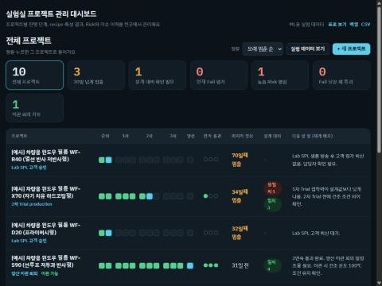
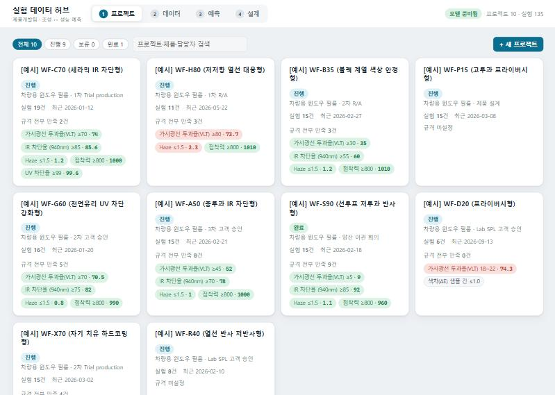
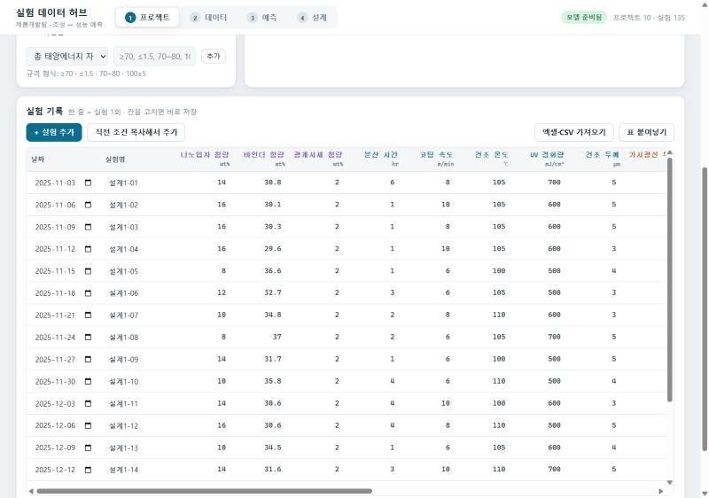
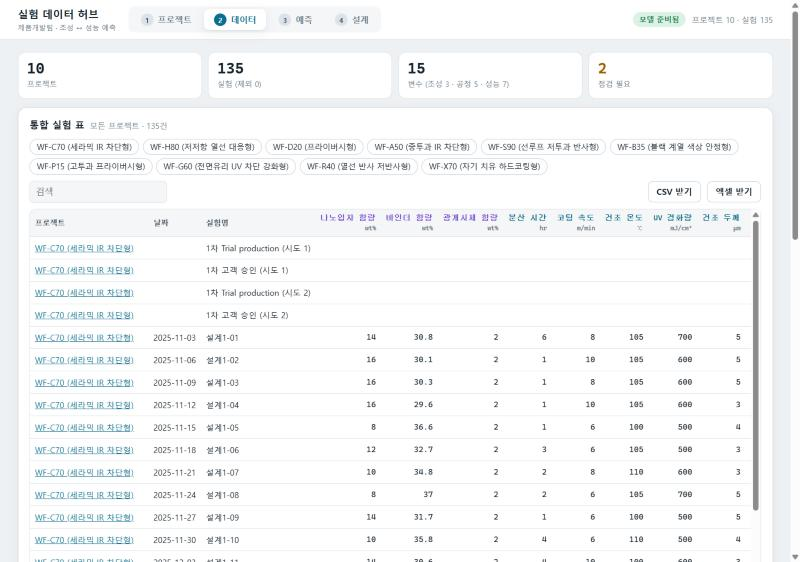
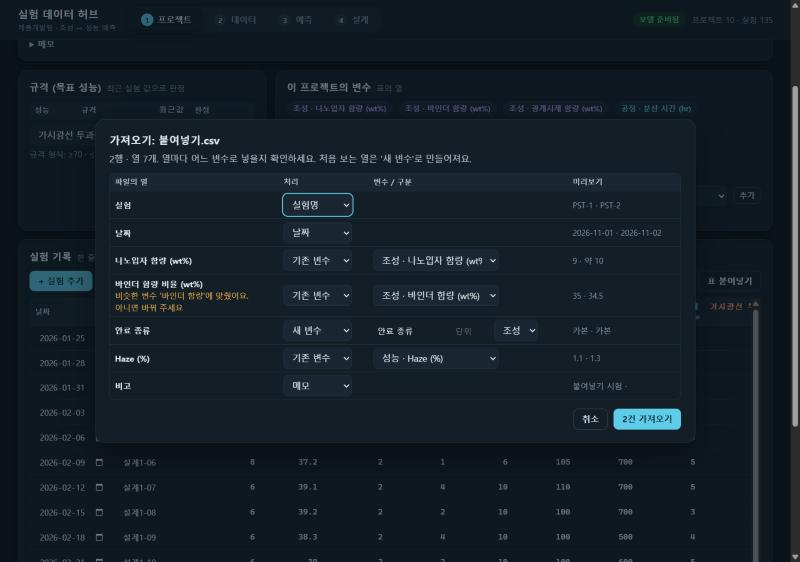
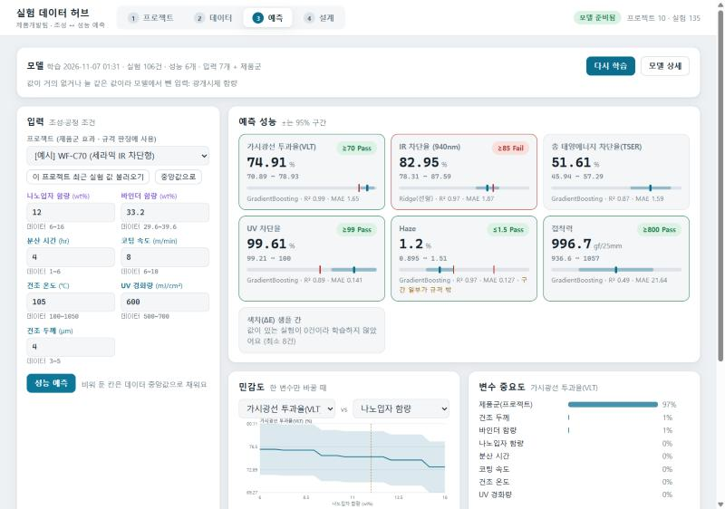
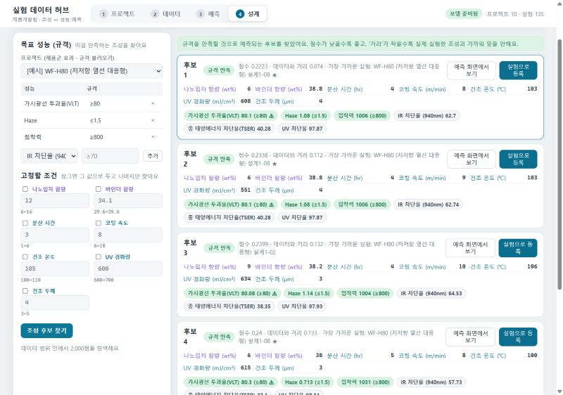
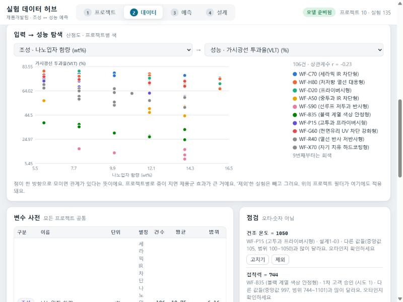

제품개발팀 · 실험 데이터 플랫폼
흩어진 프로젝트 데이터를 한 곳에 모으고, 모인 데이터로 다음 실험을 더 적게·더 정확하게
2026-11 · Laboratory_Dashboard v2 (branch feature/v2-ml-platform)
문제
프로젝트마다 담당자가 다르고, 기록은 개인 엑셀·실험 노트·메일·공유 폴더에 흩어져 있다.
| # | 문제 | 지금 모습 |
|---|---|---|
| P1 | 데이터가 흩어져 있다 | A 프로젝트의 조성-성능 결과를 B 담당자가 모른다 → 같은 실험을 다시 한다 |
| P2 | 열 이름·단위가 제각각 | "나노입자 함량(wt%)" vs "입자 %" vs "NP" → 합쳐서 볼 수 없다 |
| P3 | 새 사양이 오면 처음부터 | "VLT 60, IR 80"을 받으면 경험으로 초기 조성을 잡고 DOE를 돌린다 |
| P4 | 감에 의존한 변수 선정 | "분산 시간이 Haze에 중요한 것 같다" 수준, 근거가 남지 않는다 |
| P5 | 도구가 복잡하다 | 12단계 매트릭스·Risk 등록부… 입력 부담이 커서 데이터가 쌓이지 않는다 |

이전 버전: 단계 관리 중심. 실험 데이터는 각 프로젝트의 '제품 설계' 안에 묻혀 있고, 프로젝트를 넘어 재활용되지 않았다.
목표
흩어진 실험 데이터를 한 곳에 모으고, 모인 데이터로 조성 → 성능과 목표 성능 → 조성을 예측해서,
다음 실험을 더 적게 · 더 정확하게 하도록 돕는다.
프로젝트·실험을 한 화면에서 등록·조회. 엑셀/CSV를 가져오면 열 이름을 공통 변수로 자동 매핑.
조성·공정 조건 → 성능(VLT, IR 차단율, Haze…) 예측값 + 95% 구간 + 규격 판정 + "범위 밖" 경고.
목표 성능(규격) → 만족 가능성이 높은 조성 후보 5개 + 가장 가까운 과거 실험. 바로 실험으로 등록.
하지 않는 것: 승인 절차·Risk 워크플로, 로그인·권한, 클라우드. 단계는 한 줄 상태값으로만 남긴다.
설계 원칙
조성 (composition) 공정 (process) → 모델 입력 X
성능 (property) → 예측 대상 Y
사용 흐름
화면 1 · 프로젝트

규격 칩: 최근 실험 값으로 Pass(초록)/Fail(빨강) 판정. '규격 전부 만족 n건'으로 진척을 한눈에.

상세: 규격 편집, 실험 표(칸을 고치면 즉시 저장), 직전 조건 복사, 엑셀·CSV 가져오기, 표 붙여넣기. 노란 칸은 오타 의심.
화면 2 · 데이터

통합 실험 표(135건) + 변수 사전(이름·단위·별칭·건수·범위) + 점검 목록. CSV/엑셀 내려받기.

가져오기: 열마다 기존 변수 / 새 변수 / 날짜 / 실험명 / 메모를 제안. "바인더 함량 비율"처럼 비슷한 이름은 경고와 함께 기존 변수로 맞추고, 그 이름은 별칭으로 기억한다.
화면 3 · 예측

예측값은 규격 안이지만 95% 구간이 걸쳐 있으면 따로 표시 → "실험으로 확인" 신호
화면 4 · 설계

"데이터 범위 안에서는 모든 규격을 동시에 만족하는 조성을 찾지 못했어요"라고 말한다. 가장 가까운 후보를 보여 주되, 규격 완화나 새 범위의 실험이 필요하다는 뜻.
ML · 정방향
학습 8건 미만인 성능, 늘 같은 값인 입력은 자동 제외. 점검에서 '제외'한 실험은 학습에 쓰지 않는다. 예시 데이터 135건 기준 학습 시간 약 8초.
같은 8개 변수로만 학습하면 VLT의 R²가 0에 가깝다. 제품군마다 기본 투과율이 다른데(프라이버시형 13%, 고투과형 73%) 그 차이가 변수로 적혀 있지 않기 때문.
프로젝트를 one-hot으로 넣자 R²가 0.99로 올라갔다. 즉 모델은 "같은 제품군 안에서 조성·공정을 바꾸면 성능이 어떻게 변하는가"를 배운다.
학습에 없는 새 프로젝트는 전체 평균 기준으로 예측하고 그렇다고 경고한다 → 실험 몇 건을 넣고 재학습하면 정확해진다.

데이터 화면의 산점도: 나노입자 함량 vs VLT. 프로젝트별로 층이 뚜렷하다 — 이것이 '제품군 효과'다. 안료 종류 같은 문자열 변수도 입력에 넣으면 one-hot으로 학습에 들어간다.
ML · 결과
성공 기준(주요 성능 3개 R² ≥ 0.7)을 만족. 접착력처럼 점수가 낮은 성능은 화면에 빨간 R²로 표시되어 "믿지 말라"는 신호가 된다.
| 성능 | 채택 모델 | MAE | 무엇이 좌우하나 (중요도) |
|---|---|---|---|
| VLT | GradientBoosting | 1.6 % | 제품군 97% |
| IR 차단율 | Ridge(선형) | 1.9 % | 나노입자 함량 54% · 건조 두께 24% |
| Haze | GradientBoosting | 0.13 % | 분산 시간 92% |
| UV 차단율 | GradientBoosting | 0.14 % | 바인더 함량 85% |
| TSER | GradientBoosting | 1.6 % | 제품군 50% · 바인더 함량 39% |
| 접착력 | GradientBoosting | 22 gf/25mm | 건조 온도 41% · 제품군 34% |
"분산 시간이 Haze에 중요한 것 같다"는 감이, 데이터로 "Haze 변동의 92%는 분산 시간"이라는 근거가 된다. 중요도는 변수를 섞었을 때 예측이 얼마나 나빠지는지로 잰 값(permutation importance).
ML · 역방향
| 후보 | 나노입자 | 바인더 | 분산 | 코팅속도 | 예측 |
|---|---|---|---|---|---|
| 1 | 6 | 38.8 | 4 | 8 | VLT 80.1 Haze 1.08 접착 1006 |
| 2 | 6 | 38.8 | 4 | 9 | VLT 80.1 Haze 1.08 접착 1006 |
| 3 | 9 | 38.2 | 4 | 10 | VLT 80.1 Haze 1.14 접착 1004 |
모든 후보의 변수가 데이터 범위 안이고, 각 후보 옆에 '가장 가까운 실제 실험'(예: 설계1-08 ★)이 붙는다.
신뢰 장치
성능마다 채택 모델·학습 건수·R²·MAE·후보 모델별 점수를 '모델 상세'에서 그대로 본다. R² 0.4 미만은 빨강.
값 하나가 아니라 띠로 보여 준다. 구간이 규격에 걸치면 ⚠ 표시.
학습 데이터 min~max를 벗어난 입력은 변수 이름을 찍어 경고. 채워 넣은 중앙값도 알려 준다.
데이터가 바뀌면 상단 칩이 "재학습 필요"로 바뀐다. 오래된 모델로 예측하는 일을 막는다.
중앙값과 크게 다른 값(예: 건조 온도 1050 ℃)은 노란 칸으로 표시. '제외'하면 학습과 탐색 범위에서 빠진다.
예측 옆에 실제 실험을 같이 보여 줘서 "모델 말"과 "실제 결과"를 바로 대조할 수 있다.
성공 기준 점검
| 기준 | 목표 | 결과 | 판정 |
|---|---|---|---|
| 데이터 통합 | 기존 10개 프로젝트의 설계 실험 106건을 열 손실 없이 한 표로 | 설계 106건 + 검증(Trial·고객 승인) 29건 = 135건, 변수 15개로 자동 변환. 원본은 백업 | 달성 |
| 예측 정확도 | VLT·IR 차단율·Haze의 5-fold CV R² ≥ 0.7 | 0.99 · 0.97 · 0.97 | 달성 |
| 역설계 유효성 | 추천 조성이 규격을 만족하고 모든 변수가 데이터 범위 안 | 테스트로 검증(고정 변수 유지, 범위 안, 규격 만족). 불가능한 규격은 "없음"으로 응답 | 달성 |
| 사용성 | 실험 1건 입력 ≤ 1분, 예측·설계 ≤ 3초, 화면 ≤ 4개 | 표 안 즉시 저장 · 예측 < 1초, 설계 약 1초 · 화면 4개 (학습만 약 8초) | 달성 |
| 투명성 | 모든 예측에 점수·건수·범위 밖 경고 | 카드마다 모델·R²·MAE, 상단에 학습 건수·시각, 경고 띠 | 달성 |
| 검증 | 자동 테스트 | 단위·API 테스트 17개 통과 (python -m unittest) | 달성 |
한계와 다음 단계
--lan으로 팀 전체가 같은 데이터를 본다.정리
pip install numpy scikit-learn
python server.py → http://localhost:8810/
Windows는 start.bat. 같은 와이파이에서 같이 보려면 start-lan.bat.
docs/01_문제정의.mddocs/02_설계.mdREADME.mdfeature/v2-ml-platform)